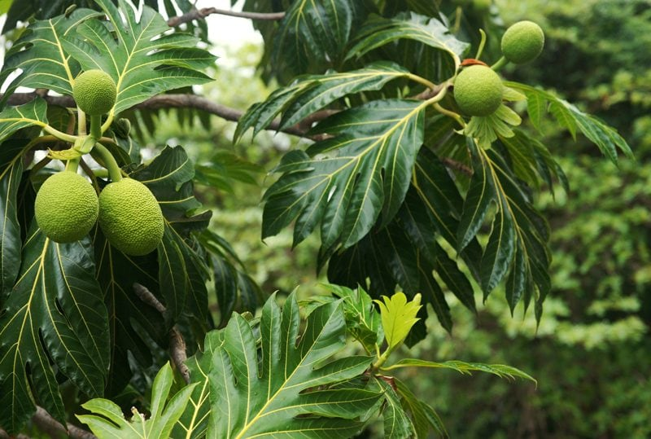

Breadfruit – Yep, Tastes Just Like Bread
Breadfruit is grown in regions like Micronesia, Hawaii, Florida, Caribbean, Western Pacific islands and the Malay Peninsula. It is one of the highest producing food plants in the world. A single tree (roughly 85 feet tall) can produce up to 150 or even more fruits per season from 50-100 years. It is closely related to the “breadnut” as well as to the jackfruit, which makes total sense because at first glance they look similar. Another great perk to this tropical treat is that it can be enjoyed throughout all stages of maturity and ripeness. We will talk more about that below.

It is green at first, turning yellowish-green as it develops and finally turns yellow or yellow-brown when ripe and can be seedless, depending upon the variety.
Pollination
Breadfruit trees are monoecious, meaning they have both male and female reproductive organs. Both male and female flowers grow on these trees. The male flowers arise first on the breadfruit trees, followed by female ones. The resulting fruit is round to oval, 6” – 8” long and about 8” across. The skin is thin and green, gradually ripening into more of a pale green or yellow with some reddish-brown areas and mottled with irregular polygon-shaped bumps. They can weigh as much as twelve pounds.
Harvesting
- Breadfruit is handpicked when maturity is indicated by the appearance of small drops of latex on the surface.
- It is not recommended to climb a tree to retrieve the fruit. There is danger in breaking branches and causing ripe fruits to fall to the ground.. possibly hitting other people below.
- Hard hats, eye protection, and mango pickers (a big dip net taped to a bamboo pole) are recommended for those harvesting the fruit. A hook knife on a pole works, but you need a catcher.
- Once harvested and depending on the transport time, breadfruit may be submerged under water to keep it fresh.
Uses of the Whole Breadfruit
 Every part of the breadfruit tree, fruit included, contains sap… just like jackfruit. If you are harvesting ripe breadfruit, there is a trick in reducing this sticky sap which loves to gum up everything it comes in contact with. Cut the stem and lay it stem side down on the newspaper. Let it rest. The sap will be drawn out and away from the fruit, making it easier to deal with.
Every part of the breadfruit tree, fruit included, contains sap… just like jackfruit. If you are harvesting ripe breadfruit, there is a trick in reducing this sticky sap which loves to gum up everything it comes in contact with. Cut the stem and lay it stem side down on the newspaper. Let it rest. The sap will be drawn out and away from the fruit, making it easier to deal with.
Under-Ripe Breadfruit
- When green or under-ripe, the fruit is hard and starchy like a potato and cannot be eaten raw.
- Breadfruit is mostly utilized as a vegetable and, when cooked, has a musky, fruity flavor and, yet, extremely mild, lending itself well to bold dishes such as curries.
- It is enjoyed boiled, steamed, baked, or fried.
- Soak breadfruit for about thirty minutes prior to use to remove the white, starchy sap or latex.
- Breadfruit can be processed into a gluten-free flour though it will not rise or have the elasticity of wheat flour but can be used like other gluten-free flours.
Ripe Breadfruit
- Ripe breadfruit may have a texture like ripe avocado or be as runny as ripe brie cheese.
- When breadfruit ripens, it becomes soft and creamy and sweet and can be eaten raw.
- Ripe fruits may be halved or quartered and steamed for one or two hours and seasoned in the same manner as baked fruit.
- The pulp scraped from soft, ripe breadfruit is combined with coconut milk, salt, and sugar and baked to make a pudding.
- In Polynesia and Micronesia, a large number of fruits are baked in a native oven and left there to ferment.
Breadfruit Tree
Wood – Tree Trunk
- The tree produces lightweight (not very strong), termite resistant wood that is used for buildings, canoes, wood for house and furniture construction.
- The wood is yellowish or yellow-gray with dark markings or orange speckles.
- Because of its lightness, the wood is in demand for surfboards.
- Traditional Hawaiian drums are made from sections of breadfruit trunks 2 ft (60 cm) long and 1 ft (30 cm) in width and these are played with the palms of the hands during Hula dances.
- The inner bark lends itself as a second-grade tapa cloth. This cloth is highly prized for its decorative value and is often found hanging on the walls as decoration.
- Fibers from the bark of the breadfruit tree can be harvested without killing the crop and used to make mosquito nets, clothing, accessories, artwork and even paper.
Latex
- After boiling the latex with coconut oil, the latex serves for caulking boats and, mixed with colored earth, is used as a paint for boats.
- The white sticky sap became glue, chewing gum, or medicine.
Wood Pulp
- The wood pulp can be made into paper.
- It is also used medicinally.
Leaves
- Leaf sheaths, like the finest of abrasives, polished utensils, bowls, or kukui nuts used for leis.
- Fallen fruits, as well as the leaves of the tree, can be used as nutritious animal feed.
Young Tree Buds
- The young buds are a medicine for mouth and throats.
Male Flower
- In addition to being a safer alternative to DEET, the male breadfruit flower is highly effective at repelling mosquitoes and other insects.
The Seeds
- The seeds are boiled, steamed, roasted over a fire or in hot coals and eaten with salt.
Health Benefits of Breadfruit
- Breadfruit is an excellent source of potassium. Potassium supports blood pressure, cardiovascular health, bone strength, and muscle strength.
- Breadfruit contains good amounts of antioxidants which help prevent the damaging effects of oxidation on cells throughout your body.
- The fiber in breadfruit inhibits the absorption of glucose from the food we eat, thus controlling diabetes. It contains compounds, which are needed by the pancreas for producing insulin in the body.
- The fiber in breadfruit flushes out the toxins from the intestine, aiding in the proper functioning of the bowel and intestines.
- Breadfruit is a good source of omega 3 and omega 6 fatty acids.
- The moderate amounts of iron in breadfruit improve blood circulation in the scalp, stimulating the hair follicles to promote hair growth. (1)
© AmieSue.com